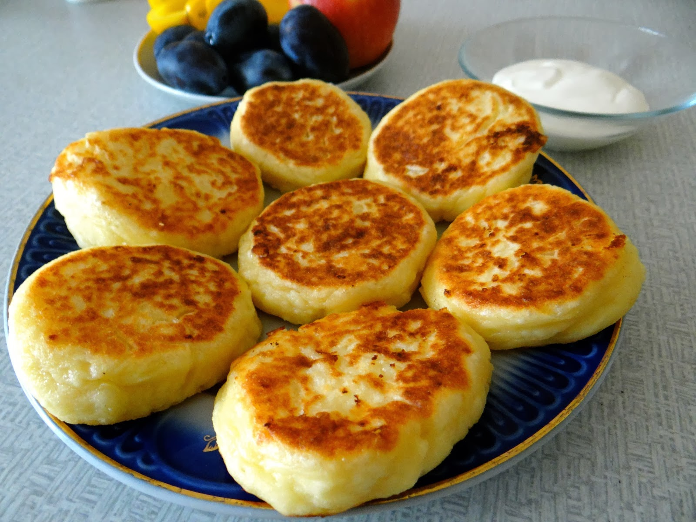

Sõrnikute valmistamine
| Koostisosad |
Kogus |
| kohupiim |
500g |
| munakollane |
2tk |
| sool |
näpuotsatäis |
| suhkur |
1sl |
| jahu |
0.5 klaasi |
| toiduõli |
silmajärgi |

Juhend
- Sega kohupiim, munakollased, jahu, sool ja suhkur. Sõtku ühtlaseks tainaks.
- Raputa lauale ja kätele jahu, vormi tainast käte vahel väikesed pallid ja vajuta laiaks. Kasta sõrnikud jahusse.
- Kuumuta pannil õli. Vajuta sõrnikud 1 cm paksusteks pätsideks ning küpseta neid keskmisel kuumusel mõlemalt poolt 3-5 minutit, kuni sõrnikud on kuldpruunid.
https://nami-nami.ee/retsept/79/sornikud